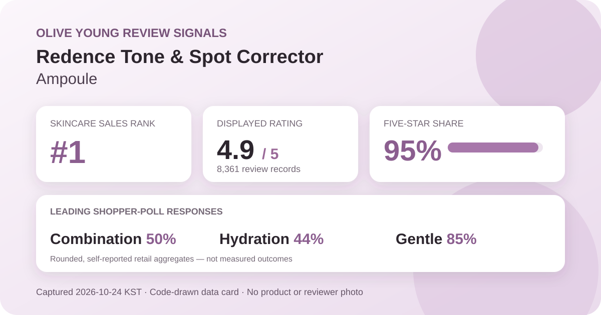
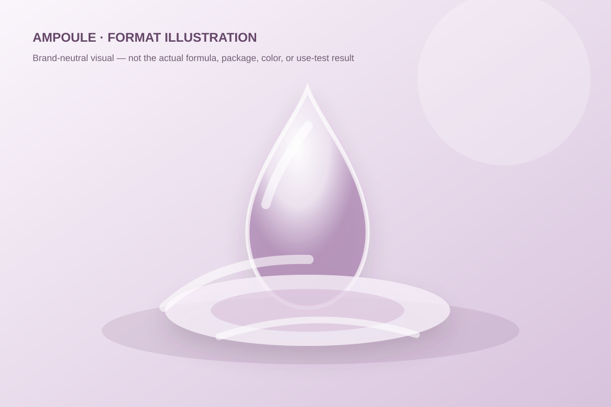

Data captured October 24, 2026. This analysis uses only a Korean K-beauty retail platform's displayed aggregate rating, star shares, anonymous shopper polls, and retailer-level automated theme summary. It does not reproduce or translate individual review text, names, or photos.

The short version: The listing showed 4.9 out of 5 from 8,361 review records. Five-star selections accounted for 95% of the displayed distribution. Combination skin led the skin-type poll, hydration led the concern poll, and 85% selected the gentle response. These are retail signals, not measured skin outcomes.
The visible average was 4.9 stars. The product header displayed 8,361 review records, and the detailed review panel repeated the same count and average. That match matters because the Redence archive now contains both a cream and an ampoule with related tone-and-spot naming. Matching the count, score, product title, and source identifier reduces the risk of joining statistics from the wrong format or promotional configuration.
The detailed panel displayed these rounded shares:
The rows total 99%, an ordinary consequence of the storefront displaying whole percentages. A zero-percent row can still hide a very small number of selections after rounding, and the difference between 95%, 3%, and 1% cannot be converted into exact review counts without the underlying denominator for each row. The defensible reading is that the displayed distribution was strongly concentrated at five stars, not that every purchaser agreed or that a skin outcome was proved.
Eight thousand three hundred sixty-one linked records offer a broader retail signal than a newly listed product with a handful of ratings. Volume does not correct selection bias, promotional incentives, routine differences, short use periods, reformulation, or packaging changes. People who rate a product are not a randomized sample, and a high store average cannot isolate what the ampoule itself caused.
The displayed skin-type poll showed 50% combination, 43% dry, and 7% oily. Combination skin formed the largest group, but the gap over dry skin was only seven percentage points. This is a mixed audience rather than a dataset dominated by one self-described skin type.
The poll describes how participants labeled themselves. It does not show that combination skin received better results, that dry skin needs the product, or that oily skin should avoid it. Skin-type labels can shift with season, climate, cleansing, medication, and other routine steps. The interface does not expose a controlled denominator for each response or establish that this was the only product changed.
The concern poll displayed 44% hydration, 40% wrinkle or brightening concern, and 15% soothing. Those rounded shares total 99%. Hydration led, but the four-point gap over wrinkle or brightening concern is too small to frame this as a purely moisture-oriented audience.
The labels are shopper-selected concerns, not measured results. The hydration share does not report water content, transepidermal water loss, barrier function, or duration. The wrinkle or brightening share does not show a change in pigmentation, lesion count, spot size, melanin index, wrinkle depth, or skin tone. The product title's “tone” and “spot” language remains merchandising context until supported by an appropriate controlled endpoint.
The irritation poll showed 85% gentle, 14% ordinary, and 1% felt irritation. The gentle response clearly led the captured interface, while the nonzero felt-irritation row is a reminder that a favorable aggregate cannot guarantee tolerance.
The listing headline foregrounded niacinamide, but this capture did not independently verify the formula, concentration, delivery, stability, pH, or directions. The product should not be compared by presumed ingredient dose. Someone with reactive skin or an already complex routine should rely on the current regional label, consider patch testing according to appropriate guidance, and stop if an adverse response occurs.
The retailer's automated recent-review summary labeled 92% of its analyzed subset as positive. At a broad level, it grouped discussion around mild-feeling use despite the ingredient-forward positioning, moisture and quick-settling texture impressions, and perceived tone or mark changes. These are machine-generated navigation themes for a recent subset, not outcomes measured across all 8,361 records.
This article does not reproduce or translate any underlying review. It also does not convert the summary into an efficacy claim. A mildness theme cannot predict tolerance; a moisture theme is not an instrument reading; and a tone or mark theme is not a clinical pigmentation assessment. The summary is useful as a map of recurring discussion topics and nothing more.

The retailer places the item in the essence, serum, and ampoule category and calls it an ampoule. In general retail language, an ampoule is a leave-on liquid or gel-like treatment step, often packaged to signal a concentrated routine role. That category label does not establish a standardized concentration, potency, ingredient delivery system, texture, or clinical effect.
I did not handle or apply this product. The illustration above is intentionally generic and should not be read as a reconstruction of the real color, viscosity, scent, spread, absorption speed, tack, residue, or layering behavior. The current label should determine order, amount, frequency, precautions, and storage. Related naming does not make this ampoule interchangeable with the Redence cream already covered on this site.
At capture, the Korean listing showed a ₩39,900 reference price and a ₩19,900 promotional price for a double plan built around 30 ml units. The page displayed a 10 ml unit price, but the promotional bundle, gift status, coupon eligibility, and checkout total can change. This is a dated storefront anchor, not a permanent value claim.
The 8,361 linked records may span earlier prices, promotions, packaging, or formula presentations rather than only the exact double plan visible on October 24. Before comparing value, verify the current included volume, seller, regional label, return terms, coupon conditions, and directions. A large review count does not guarantee that every record describes the identical bundle now on screen.
The narrow, defensible reading is that Redence Tone & Spot Corrector Ampoule was the first ranked candidate and a distinct unpublished product; it held skincare rank 1; its header and review panel agreed on a rounded 4.9 average across 8,361 records; 95% of the displayed star selections were five-star; combination skin led the skin-type poll; hydration narrowly led the concern poll; and the gentle response led the irritation poll.
Those signals make the ampoule notable within the captured Korean retail snapshot and useful for comparing high-volume serum-format datasets. They do not justify calling it clinically brightening, spot-correcting, wrinkle-reducing, universally gentle, or superior to the related cream. A sensible next step is to check the current regional ingredient list and directions, compare the actual bundle price per milliliter, and judge the formula against one's tolerance history rather than the product name alone.
Combination skin was the largest displayed skin-type response at 50%, followed by dry skin at 43% and oily skin at 7%. That describes poll representation, not proven suitability or a guaranteed result.
The product title and anonymous summary frame tone and spot concerns, but the captured retail aggregates do not measure pigmentation, brightness, lesion change, or clinical efficacy.
The captured irritation poll showed 85% gentle, 14% ordinary, and 1% felt irritation. Rounded self-reported shares cannot predict individual tolerance.
The listing identifies an ampoule, and the automated summary included moisture and quick-settling texture impressions. This analysis did not apply the product and does not claim a specific viscosity, scent, absorption speed, tack, or finish.
It is a rounded retail satisfaction signal across 8,361 linked records. It is not a clinical trial, proof of efficacy, or a prediction for one person's skin.
Source: Olive Young Korea product page, captured October 24, 2026. Product title, ranking, pack, price, rating, review count, star shares, poll values, and automated summary can change.
Published by The K-Beauty Data Desk. The source does not independently verify every buyer's identity, and this page is an editorial analysis of retailer-displayed aggregates—not medical advice or a substitute for the current product label.
← All reviews · Review-volume rankings · Skin-poll explorer · Methodology